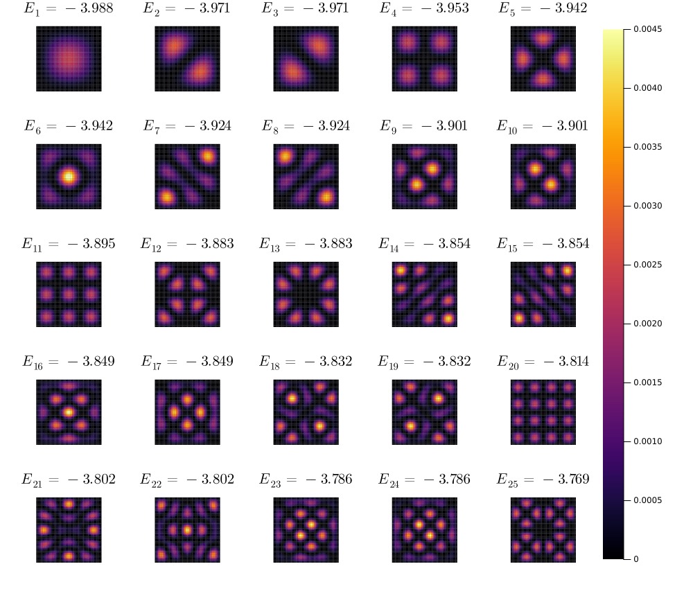

Examples
Lowest states in a tight-binding model
The tight-binding model Hamiltonian is defined by this formula:
\[\hat{H} = \sum_i^\text{sites} \left( c^\dagger_{i + \hat{x}} c_i + c^\dagger_{i + \hat{y}} c_i + h. c. \right)\]
Here we will find its eigenstates and plot their local density on heatmaps.
using LatticeModels
using Plots
# Generate a 40x40 square lattice
l = SquareLattice(40, 40)
# Define the tight-binding model Hamiltonian
H = tightbinding_hamiltonian(l)
# Calculate eigenvalues and eigenvectors
diag = diagonalize(H)
n = 5
clims = (0, 0.0045)
p = plot(layout = @layout[grid(n, n) a{0.1w}], size=(1000, 850))
for i in 1:n^2
E_rounded = round(diag.values[i], sigdigits=4)
plot!(p[i], localdensity(diag[i]), title="\$E_{$i} = $E_rounded\$", st=:shape, clims=clims,
c=:inferno, cbar=:none, lw=0, framestyle=:none)
end
# The following lines are kinda hacky; they draw one colorbar for all heatmaps
plot!(p[n^2+1], framestyle=:none)
scatter!([NaN], zcolor=[NaN], clims=clims, leg=:none, cbar=:right, subplot=n^2+2,
background_subplot=:transparent, framestyle=:none, inset=bbox(0.0, 0.05, 0.95, 0.9))
savefig("local_density.png")
Currents on a ring-shaped sample
In this example we create a ring-shaped sample of a triangular lattice. Then we adiabatically turn on magnetic field through the hole and see currents emerge.
using LatticeModels
using Plots
l = TriangularLattice(Circle(10), !Circle(5))
removedangling!(l)
h(B) = tightbinding_hamiltonian(l, field=PointFlux(B))
diag = diagonalize(h(0))
# Find density matrix for filled bands (e. g. energy < 0)
P_0 = densitymatrix(diag, mu = 0)
# Perform unitary evolution
τ = 10
a = Animation()
ev = Evolution(t -> h(0.1 * min(t, τ) / τ), P_0)
for state in ev(0:0.1:2τ)
P, H, t = state
# Find the density and plot it
p = plot(layout=2, size=(1000, 500))
plot!(p[1], localdensity(P), clims=(0, 1), st=:shape)
# Show currents on the plot
plot!(p[2], DensityCurrents(H, P), clims=(0, 0.005), lw=1, arrowheadsize=0.3)
title!("t = $t")
frame(a)
end
gif(a, "adiabatic_flux.gif")
LDOS animation
Local density can be a bit ambiguous for degenerate eigenstates. That's where the LDOS (e. g. the Local Density of States) will be helpful.
The formula for the LDOS is the following:
\[\text{LDOS}_\alpha(E) = \text{Im} G_{\alpha\alpha}(E - i\delta)\]
where (G) is the Green's function and (\delta) is the broadening.
Let's create an animation presenting the DOS and LDOS for a square lattice with a hole indside. We will use the QWZ model hamiltonian, because it has a two-zone band structure, which will make the results more interesting. See qwz for more information about the QWZ model.
using LatticeModels
using Plots
l = SquareLattice(20, 20)
l_center = l[j1 = 8..13, j2 = 8..13]
setdiff!(l, l_center) # remove the center
H = qwz(l)
dg = diagonalize(H)
δ = 0.1
Es = -4:0.1:4
Es_d = -4:0.01:4
G = greenfunction(dg)
a = @animate for E in Es
p = plot(layout=2, size=(800, 400))
plot!(p[1], Es_d, dos(G, broaden=δ), lab="", title="DOS")
vline!(p[1], [E], lab="")
plot!(p[2], ldos(G, E, broaden=δ), st=:shape, c=:inferno, clims=(0, NaN), title="LDOS", lw=0)
plot!(p, plot_title="E = $E, δ = $δ")
end
gif(a, "ldos_animation.gif", fps=10)